|
|
|
|
Interprete Tech
Domina mas la tecnologia Practicando


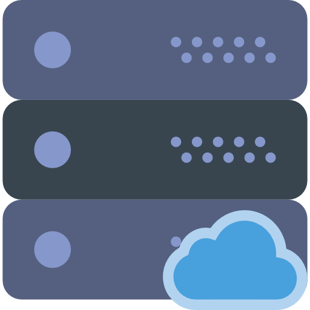

Interactuamos con la tecnologia a dirario y pocos son los que conocen el proceso que toma para obtener los resultados finales. Como por ejemplo ¡La comunicacion del usuario hacia un ordenador..!!
Has utilizado un mouse o un teclado quizas un microfono incluso la camara digital. Pues esta se los conoce como dispositivos de entrada utilez para que el ordenador pueda interactuar con el usuario. Pues si basicamente estas teniendo comunicacion con una maquina u ordenador. ¿Hasta donde llega? los datos que son introducidos llegan hasta la memoria interna o conocido como 'Memoria ROM'. Para que los ordenadores entiendan, la informacion se convierte en señales electricas y esas señales se guardan en la 'Memoria central' o como otros lo conocen 'Memoria RAM'.
El 'Microprocesador' es un chip pequeño con el que todo ordenador cuenta, tiene la tarea de recibi e interpretar la informacion. Finalmente muestra la informacion para el usuario ¿Como lo hace? Mediante los dipositivos de salida como: El monitor, los parlantes, impresoras y plotter.
Todos contamos con un celular movil en estos tiempo, veremos cuales son algunos de sus componentes.
Bateria La mayoria de los dispositivos portatiles cuentan con baterias para mantenerlos encendidos en un plazo de tiempo dependiendo de la cantidad de energia almacenada. PLaca Base es el cerebro del dispositivo ya que contiene el sistema operativo y es el encargado de procesar la informacion como tambien administrarla. Antena Su proposito es enviar o recibir las señales de los dispositivos como las llamadas o mensajes.
Microfono Permite captar y trasformar la voz humana de una manera que el dispositivo pueda entender y asi poder enviarlo a otros dispositivos. Altavoz es el encargado de reproducir los sonidos, obiamente el dispositivo realiza el procedimiento adecuado para poder escuchar la voz humana. Camara Permite captar o registrar imagenes de diferentes tamaños y angulos de algo o alguien.
Puertos permiten conectar cables como "Auricular" y el "USB" util para recargar la bateria o manipular archivos desde tu ordenador.
Memoria Externa permiten almacenar datos e informacion util cuando la memoria interna esta llena. tambien permite visualizar esos datos en otros dispositivos. Pantalla esta echo con cristal liquido lcd y cubierto por un marco o cristal tactil. la pantalla permite visualizar contendio permitiendo interactuar con el usuario.
Un bits es representado simplemente con 0 y 1 que significa "apagado" y "encendido" Esto es considerado como 'Lenguaje de maquina' lo cual permite que los dispositivos u ordenadores puedan entender lo que el usuario especifica. Puede que se nos resulte muy complejo escribir una serie de instrucciones encrito en lenguaje de maquina o bits o binario como quieras llamarlo, pero para el ordenador es muy facil ya que es su propio idioma haci que lo entiende a la perfeccion. Los binarios funcionan con sistemas de Base 2 quiere decir que la columna vale 2 veces mas que el de la derecha. Por Ejemplo:
| 64 | 32 | 16 | 8 | 4 | 2 |
| 1 | 1 | 0 | 1 | 0 | 0 |

Un Byte es la unidad de memoria que guarda un caracter y cada Byte esta compusto por un conjunto de 8 Bits veamos un ejemplo sencillo:
| 01000011 | C |
| 01100101 | e |
| 01101100 | l |
| 01110101 | u |
| 01101100 | l |
| 01100001 | a |
| 01110010 | r |
Es considerado como el cerebro del ordenador ya que es el encargado de realizar los procesos matematicos y los precesos de control para el que ordenador puede realizar sus funciones, es simplemete un CHIP insertado en la tarjeta madre. Como sabemos todo los procesos que realiza la computadora son gracias a Numeros Binarios y complejas operaciones matematicas, es por eso cuanto mas rapido realize un Procesador estas operaciones mejor sera el rendimiento del ordenador.

La velocidad del Procesador se mide en hercios esta es la unidad de frecuencia que equivale a una vibracion por segundo.
Cuando un programa se coloca en proceso la CPU utiliza la memoria RAM y cualquier otro hardware con el fin de Procesar los datos, la informacion que la CPU resive tiene que ver con los calculos y el trasporte de datos. De manera paralela el Porcesador maneja 2 datos en el mismo momento.
La memoria de acceso aleatorio o tambien conocido como RAM, es una memoria bolatil es decir que cuando pierde el flujo de la corriente esta pierde toda la informacion almacendad, esta mecanica es muy necesaria para el funcionamiento principal que es almacenar informacion a corto plazo.
Pongamos un ejemplo: Cuando ejecutas o abres algun programa, la CPU da la orden de leer el disco duro pero esta operacion es muy larga y costosa, al momento de utilizar el programa generas informacion esta informacion se grabaria en el disco duro, lo cual se traduce a mas movimiento de informacion y en tal que caso que deceas acceder a otro programa todo se volveria un caos. La RAM ayuda a que este proceso de leer y grabar informacion se mas agil, en vez de estar leyendo el disco duro cada vez que haces una modificacion en el programa lo que sucede es que el CPU da la orden de que parte del programa se carge en la RAM y lo mejor de todo es que te permitira cambiar o realizar multiples tareas. Es por eso que se llama memoria de acceso aleatorio, mientras mas espacio libre tengas en esta memoria mejor sera el rendimiento de tu dispositivo.
Se lo conocem como la columna verteblar de un ordenador y cualquier otro dispositivo, lo Targeta madre da la infraestructura para que los demas componentes se conceten entre si, en un ordenador es la targeta mas grande ya que permite conectar mas circuitos electronicos como Memoria Ram, Targeta Grafica, Procesador y Discos Duros.

Las targetas madres contiene un software llamado BIOS que sirve para dirigir las conecciones entre componentes y tambien para actualizar y corregir errores de funcionalidad de la targeta madre, en el caso de los ordenadores se puede visualizar la BIOS pero en dispositivos celulares No. La Targeta Madre lo utiliza los telefonos, consolas y hasta autos. Debes tener muchos cuidado con este componente informatico, si llega a sufrir algun daño puede significar la muerte de tu dispositivo.
Un ordenador requiere de cierto componentes para su funcionamiento, los elementos que conforman a un ordenador son las partes fisicas conocidas como Hardware y las partes logicas conocidas como Software cuando hablamos de hardware nos referimos a todo lo que se puede tocar en una computadora es decir lo Tangible. La CPU es un hardware que realiza operaciones logicas y matematicas, ademas controla a todo los dispositivos fisicos del ordenador como: el monitor, teclado, impresora y mouse.
El software son todos los programas que proporcionan instrucciones para que el Hardware pueda funcionar, se dice que el Software es la parte No Tangible del ordenador, gracias al software es posible realizar tareas especificas, pues existen infinidad de programas para diferentes actividades.
Una RED informatica es un conjunto de equipos informaticos conectados entre si por medios de dispositivos fisicos que envian y reciben impulsos electricos, ondas electromacneticas y cualquier otro medio para compartir informacion o recursos
.Red de are personal o tambien conocido como PAN tiene la capacidad de manejar dos o mas dispositivos, es una red que no depende de internet a la hora de trabajar pero puedes utilizar internet sin ningun problema, puedes conectar: Computadoras, Audifonos, Celulares. Un ejemplo sencillo es Bluetooth:
Es una RED que permite crear vinculos inalambricos entre dispositivos a corta distancia, puedes enviar archivos multimedia o de otro tipo.
Red de area local o tambien conocido como LAN en esta red se conecta ordenadores que estan en la misma red y que contengan un espacio fisico pequeño, son muy utilizadas en areas como: oficinas, cuartos, hogares permitiendo compartir archivos e informacion, es muy util a la hora de realizar trabajos en conjunto.
Red de area metropolitana o tambien conocido como MAN es una red de alta velocidad que da cobertura a una area geografica extensa, su velocidad se debe a que utiliza fibra optica. Un ejemplo seria: una infraestructura de un operador de telecomunicaciones instaladas en una ciudad con el fin de ofrecer servicios de banda ancha a los usuarios.
Red de area extensa o tambien conocida como WAN es un tipo de red de computadoras capaz de cubrir distancias desde unos 100km hasta unos 1000km dando servicios a un pais o continente.
Un sitio web esta estructurado por Frontend y por Backend quiere decir por lo que SI se muestra y por lo que NO se muestra. En el lado del Frontend se encuentras las tecnologias como HTML, CSS, JAVASCRIPT estas tecnologias te permiten crear la estructura de un sitio web como la cabezara, el formulario, el pie de pagina, el menu de navegacion, adaptarse a cualquier tamaño de pantalla, interactividad, colores, diseños y mucho mas. Todas estas corren en cualquier Navegador de internet, esto se lo considera como una pagina Estatica por lo que solo muestra informacion. Pero tambien existen las pagina Dinamicas.
En el lado del Backend se encuentran tecnologias como PHP, MYSQL, PYTHON y NODE.JS estas tecnologias te permiten realizar Api Rest, concexiones a bases de datos y programacion del lado del servidor. El codigo que se escrive para el servidor es Secreto quiere decir que no puedes verlo tan facilmente, en cambio la programacion del lado del cliente que es el Frontend puedes verlo sin ningun problema y saber como estan realizadas dandole click derecho en la opcion Inspeccionar.
Todo comienza cuando escribes una peticion en el Buscador o lo escribes directamente en la URL, esa peticion viaja hacia los servidores buscando la informacion corespondiente, cuando encuentra los archivos escritos por un lenguaje de programacion ya sea (PHP, PYTHON, NODE). Se concecta una base de datos para abstraer los datos necesarios del sitio dependiendo si el sitio contiene una, de lo contrario no se conecta a una base de datos. Ahora, esta listo para mostrar el contenido en pantalla pero el codigo del lado del servidor es Secreto entonces ¿como se muestra? Gracias al codigo del lado del navegador o Frontend se muestra y se posiciona dependiendo de las especificaciones del Frontend.
Un Sistema operativo es un software o conjunto de palabras que permiten al usuario interactuar con el oredenador, el sistema operativo realiza la ejecucion de programas que estan instalados en el disco duro, tambien ofrecen un interfaz graficas y comoda a los usuarios o tambien puedes que ejecuta instrucciones y comandos.
Existen algunos Sistemas operativos:
Los sistemas operativos realizan tareas basicas, tales como reconocimiento de la conexion del teclado, enviar la informacion a la panatalla, no perder de vista archivos y directorios en el disco, y controlar los dispositivos perifericos tales como impresoras. Tambien pueden ser clasificados en:
Multiusuario: permite que dos o mas usuarios utilicen sus programas al mismo tiempo.
Multiprocesador: soporta el abrir un mismo programa en mas de un CPU.
Multitarea: permite que varios programas se ejecuten al mismo tiempo.
Multitramo: permite que diversas partes de un solo programa funcione al mismo tiempo.
Tiempo real: responde a las entradas inmediatamente.
Es un Sistema basico de entrada y salida consiste de una serie de instrucciones almacenadas en un chip en la targeta madre del ordenador. La funcion principal de la BIOS es arrancar la pc, cuando esta encendido realiza un Test de memoria RAM y comprueba que dispositivos estan conectados. Sabemos muy bien que "HARDWARE" y "SOFTWARE" esta separados, asi que es la BIOS quien decide que sistema operativo debe arrancar, durante este proceso configura los dispositivos externos como Discos duros, USB por lo tanto si la BIOS no detecta el dispositivos, el sistema no podria usarlo. Tambien se encarga de detectar si existe un incombeniente grave en el ordenador, si es asi inmediatamente realiza un analisis para saber cual es el error y a que se debe. Y por ultimo gracias a la BIOS puedes modificar configuraciones del "HARDWARE" como la potencia del ventilador.
Es la ciencia e ingenio de crear maquinas inteligentes especialmente programas de computo. Existen 4 tipos de inteligencia artificial.

Es un lenguaje formal para realizar procesos que son llebadas a cabo por ordenadores y se utilizan para crear programas. Tambien nos permite escribir una serie de instrucciones que el ordenador puede entender, ya que comunmente las computadoras no entienden nuestro lenguaje tambien esta formado por un conjunto de simbolos y reglas.
Aqui algunos lenguajes populares:
Javascript: es un lengueje de programacion interpretado es decir que no requiere de compilacion sino que es analisado por otro programa como los navegadores web, javascript esta echo para corren en los navegadores.
Java: es un lenguaje de programacion de proposito general es decir, que se pueden realizar aplicaciones web, moviles, escritorio. Tiene la habilidad de ejecutar varias tareas a la vez tambien es un lenguaje orientado a objetos.
C++: es un lenguaje derivado de C, es orientado a obejtos, fue diseñado para ser la programacion mas eficiente ofreciendo mas opciones a la hora de programar, puedes crear juegos, aplicaciones moviles y aplicaciones de escritorio
PHP: es un lenguaje multiplataforma, se utiliza como lenguaje del lado del servidor haciendo su codigo invisible para los usuarios de internet, es orientada a aplicaciones web dinamicas, tiene la capacidad de conexiones a bases de datos.
PYTHON: es un lenguaje de programacion orientado a objetos, contiene una sintaxis muy facil y simple, puedes desarrollar aplicaciones de escritorio, paginas web, acceso a bases de datos.
RUBY: es un lenguaje de programacion dinamico y de codigo abierto, es muy popular en sitios web, es multiplataforma, pocos desarrolladores lo utilizan, esta construido en MVC modelo vista controlador lo que hace su desarrollo mas facil.
SWIFT: es un lenguaje de programacion usados por IOS y sirve para desarrollar aplicaciones para todos los dispositivos con sistemas operativos IOS.
Un ordenador interactua con imagenes, sonidos, palabras y mucho mas. Nada de esto se pierde gracias a un elemento dentro del ordenador, lo cual guarda o almacena en algo que se llama Disco Duro ese es su trabajo, poder guardar y recuperar informacion a gran velocidad, puede almacenar miles y miles catidades de datos.
El Disco duro contiene partes principales: Un Sircuito impreso que recibe las ordenes del ordenador y controla el disco. Un Motor electrico que hace funcionar el plato del disco duro a 7.000 revoluciones por minuto. Los Brazos que sostiene los cabezales de escritura y lectura, los extremos de los brasos son abiertos ya que justo en medio se coloca el plato, pero los cabezales jamas topan los platos. Los Datos se almacenan al interior de unas pequeñas pistas en la superficie del plato, puede contener hasta 200.000 pistas y cada pista esta dividida en sectores. El mapa de las pistas de los sectores que ahi en los sircuitos impresos le dice al Cabezal donde tiene que leer o escribir exactamente la informacion. En la supercifie ahi una pelicula magnetica que memoriza toda la informacion los Cabezales magnetizan las secciones de la pelicula y almacenan los datos utilizando el Codigo Binario o como otros lo conocen BITS quiere decir 0 y 1.
Un servidor es ordenador muy potente que tiene como tarea de almacenar archivos y distribuirlos en internet, para que sean accecibles a todos los usuarios. Pero se lo llama asi Servidor, por que ofrece una serie de servicios. Como el almacenamiento de:
Es por eso que existen varios tipos de Servidores pero los principales son:
FTP sirve para mover archivos entre uno o mas ordenadores ya que proporciona seguridad y administracion de los archivos asi tambien control de trasferencia.
IRC sirven para aquellos usuarios que buscan discuciones en tiempo real, consiste en varias redes de servidores separadas que permite a los usuarios conectarse gracias a la red IRC
Correo son aquellos que mueven los Email a travez de las redes coorporativas y a travez de internet.
Bases de Datos Son muy utilizadas por las empresas paraa manejar grandes cantidades de datos, tambien lo utilizan para compartir informacion con un conjunto de clientes.
Servidores Web estos son los que almacenan los archivos HTML y lo proporciona a los clientes que lo solicita ¿Como lo hace? pues haciendo la trasferencia de los archivos a travez de los navegadores.
Es la ciencia que se encarga de indicarle al ordenador que hacer mediante pasos secuenciales, gracias a esto se pueden desarrollar aplicaciones moviles, aplicaciones de escritorio, sistemas web y videojuegos. Todo esto es gracias a los Programadores que se desempeñan en diferentes areas de la tecnologia. Los lenguajes de programacion son los encargados de trasferir la serie de pasos dictados por el programador de una manera que el ordenador pueda entender. Existen muchos lenguajes de programacion en el que te puedes desempeñar, aqui los 10 mas demandados.
Es una serie de instrucciones organizadas y ordenadas muy utiles para solucionar problemas, los algoritmos tiene una estructura basica que es un INICIO y un FIN
.
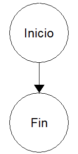
Los algoritmos se definen en dos tipos.
Loa valores que entran a tu programa son escritas mediante el teclado, y se los conoce como lectura una vez obtiene el Dato puede ser almacenado en una variable.
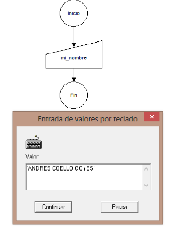
En este caso tengo una variable con su respectivo nombre mi_nombre y su valor es lo que esta escrito en la ventana pequeña.
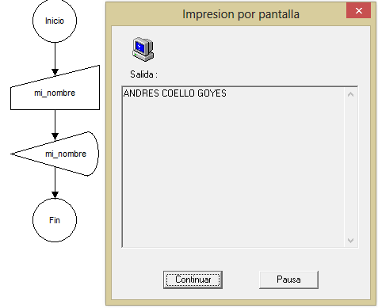
Para mostrar el valor de la variable simplemente utilizo la opcion de salida con el nombre de la variable a mostrar.
Espero que ahiga quedado claro ya que esto es fundamental para poder siguir avanzando en otros temas.
En la moyoria de los lenguajes de programacion cuentas con Operadores aritmeticos para realizar calculos matematicos, de seguro ya los conoces pero repasemos un poco:
| Operador | Su uso |
| + | Suma |
| - | Resta |
| * | Multiplicacion |
| / | Divicion |
| % | Modulo |
| ++ | Incremento |
| -- | Decremento |
Tambien se los conoce como operadores booleanos porque siempre retornan como (1 o 0) osea (verdadero o falso). Veremos cuales son:
| Operador | Llamado |
| && | AND |
| || | OR |
| ! | NOT |
| Elemento1 | Elemento2 | Retorno |
| Verdadero | Verdadero | verdadero |
| verdadero | Falso | Falso |
| Falso | Verdadero | Falso |
| Falso | Falso | Falso |
| Elemento1 | Elemento2 | Retorno |
| Verdadero | Verdadero | Verdadero |
| Falso | Verdadero | Verdadero |
| Verdadero | Falso | Verdadero |
| Falso | Falso | Falso |
| Elemento | Retorno |
| Verdadero | Falso |
| Falso | Verdadero |
Existen 3 tipos de datos seguramente ya los conoces pero recordemos algunos.
Una variables se determina como el lugar de almacenamiento que puede contener informacion de distintos tipos. O tambien se determina como una caja donde puedes guardar tus datos y utilizarlos en el momento que deceas.
Veamos un ejemplo:

Declaramos una variable de tipo String que quiere decir una serie de "caracteres", las variables contienen nombres para distinguir unos de otros, pero el valor es el dato almacenado. En este caso Saludar es el nombre de la variables y Hola buenos dias es el valor almacenado, si quisiera mostrar ese valor en pantalla solo tengo que llamar a la variables por su nombre. Algo que debes de tener en cuenta es que una Variable puede cambiar su valor y renombrarla si deceas.
Las Constante tambien son variables pero con la diferencia de que su valor no puede ser reemplazado. Un ejemplo seria: PI-3.1416 te has dado cuenta que en matematicas "PI" siempre tiene ese valor.
Las Condiciones son utilizadas para tomar desiciones en el proceso de tu programa, normalmente contiene 2 caminos (SI y NO) si la condicion especificada es verdadera o se cumple, la condicion tomara el camino de "SI" pero si la condicion especificada no se cumple o no es verdadera tomara el camino de "NO" Veamos un ejemplo:
Imaginemos que deceas inscribirte a un curso de manejo para obtener tu licencia de conducir pero el curso acepta solo personas de mayor de edad.
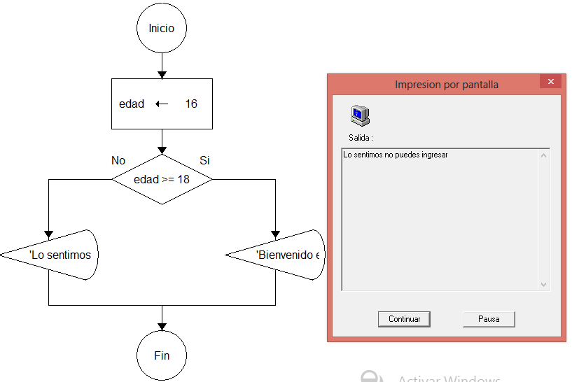
Tenemos una variable de tipo numerico con el valor 16 y para acceder al curso necesito 18 o mas la Condicion pregunta SI(mi edad 'es igual o mayor a' 18). Por lo cual la condicon no se cumple o es falsa y toma el camido de NO mostrando asi el mensaje de acceso denegado.
Los Ciclos se lo utilizan para ejecutar un conjunto de instrucciones varias veces Basandose siempre en una condicion que decidira si se sigue repitiendo o no, el numero de vueltas dada tambien lo especificaras en la condicion. Existe algunos ciclo pero los mas comunes son Mientras y el Para Veamos un ejemplo:
Necesitas mostrar en pantalla los numemos del 1 a 20. si no utilizamos un ciclo tendriamos que escribir manualmente 1-2-3-4-5-6.... pero eso seria una Mala Practica.

Este es un ciclo Para, contiene una condicion al principio y un cierre al final. En la condicion se declara una variable llamada indice y se especifica un valor numerico, es el valor 1 eso significa que el ciclo parte del numero 1. El siguiente valor es hasta donde quieres que llegue el ciclo en este caso hsata el 20. Y por ultimo detallas si quieres que valla de 1 en 1 o de 2 en 2 como tu quieras.
En medio de la condicion y cierre se especifica el conjunto de instrucciones, en este caso muestro un mensaje de la variable indice, eso quiere decir que se mostrar 20 veces el mensaje con el valor del indice y como sabras el indice cambia de valor con cada vuelta del ciclo.
Ahora veremos un ejemplo con el ciclo Mientras

Imaginemos que el puntaje de un juego es el que te permite estar vivo en una partida, si no contienes puntos pierdes la partida.
Asi tengo una variable llamada Puntaje de tipo numerico con el valor 10 entonces Mientras(mi puntaje 'sea mayor a' 0) entonces puede entrar al ciclo "Por que la condicion es verdadera" pero cada vez que termina una vuelta se resta 1 punto asi que llegara el momento que no tenga ningun puntaje y en ese momento la condicion sera falsa y dejara de entrar al ciclo. Mientas tanto se mostrara en pantalla el mensaje diciendo que aum estoy vivo.
En programacion se le denomina "vector" o formacion a una zona de almacenamiento del mismo tipo, los elemntos de la matriz. Desde el punto de vista logico una matriz se puede ver como un conjunto de elementos ordenados en fila.
En principio, se puede considerar que todas las matrices son de una dimension, la dimension principal, pero los elementos de dicha fila puede ser a su vez metrices, lo que nos permiten hablar de la existencia de matrices multidimensionales, aunque las mas faciles de imaginar son los de una, dos y tres dimensiones.
| 0 | 1 | 2 | 3 | 4 | 5 | 6 | 7 | 8 | 9 |
| . | . | . | . | . | . | . | . | . | . |
En programacion un arreglo se lo denomina como una variable que puede contener multiples datos, es decir en una variable puedes almacenar tu (nombre, apellido, edad) y mucho mas. Como se objesva en el grafico, cada dato tiene una posicion diferente, si deceas mostrar un dato simplemente tienes que escribir la variable y acedes al dato por su numero de posicion.
Una Funcion es un bloque de instrucciones que puede ser llamada a ejecucion desde cualquier parte del programa, la puedes llamar tantas veces como decea. Por ejemplo:
Tienes una serie de numeros y quieres saber cual es el promedio. No tienes porque hacer un procedimiento para cada numero simplemente crea una Funcion que te permite realizar la tarea.
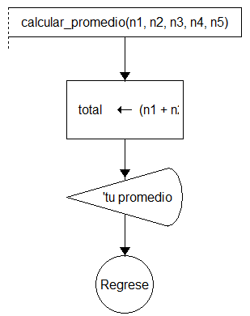
Una Funcion tambien se lo conoce como SubPrograma en este caso el DFD no contiene un INICIO ni tampoco un FIN, las funciones contienen nombres para diferenciar unos de otros y los valores que entren por el parametro (n1,n2,...) solo existen dentro de esa funcion. Hasta ahora la Funcion cumple con su proposito, pero no muestra ningun mensaje de salida, para eso necesitas llamar a la funcion por su nombre "calcular_promedio" desde la ventana principal del DFD para que se ejecute.
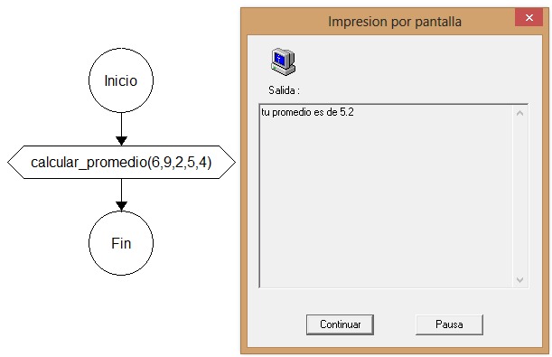
Como se puede observar realizo una llamada a la funcion por su nombre, desde la ventana principal. Las variables y funciones tiene nombres pero lo que hace especial a una funcion son los parametros dentro de ellos especificas el valor a procesar (6,9,2...) son los mismo valores que (n1, n2, n3...).
C++ es un lenguaje de programacion orientado a objetos y fue diseñado para ser la programacion mas eficiente ofreciendo muchas opciones a la momento de programar. Con este lenguaje podras crear Aplicaciones de escritorio, videojuegos y aplicaciones moviles. Es muy recomendado para aquellas personas que quieren aprender a programar, Conoscamos el ambiente que nos ofrece Dev-c++ puedes descargarlo, buscandolo en internet.

Creo un nuevo archivo y lo guardo en un carpeto con el nombre prueba.c luego escribo una libreria la mas comun es #include stdio.h, el main(){} es una funcion que pertenece al lenguaje c++, es el area principal para escribir codigos e instrucciones. Como vemos en el ejemplo dentro del main imprimo en pantalla Hola mundo que es mostrada en la linea de comandos.
Ya aviamos visto que es una variables, se determina como el lugar de almacenamiento que puede contener informacion de distintos tipos. O tambien se determina como una caja donde puedes guardar tus datos y utilizarlos en el momento que deceas.

Como podemos observar tengo 3 variables 2 de tipo string y 1 de tipo numerico en ellas almaceno el nombre, apellido y edad para mostrarlo en pantalla, escribimos la palabra clave printf() y especificando dentro, que es lo que quiero mostrar. (Si es texto o caracter) lo escribes entre " " comillas. Para mostar una variable en pantalla, se lo escribe sin " " comillas y para concatenar o unir un texto con una variable, se escribe con una (, coma entre el TEXTO y la VARIABLE
Las Condiciones son utilizadas para tomar desiciones en el proceso de tu programa, normalmente contiene 2 caminos (verdadero y falso) o (si y no). Veamos un ejemplo para entenderlo mejor.

Tengo una variable llamada puntos de tipo numerico y su valor lo especifica el usuario mediante lectura como aviamos visto anteriormente en los DFD. Luego muestro un mensaje con printf() en patalla diciendo inserte la cantidad de puntos, ahora especificamos el valor a la variable puntos mediante lectura con scanf().
Ahora que tenemos el valor, hacemos la condicion con if(condicion){ /// } esta parte se ejecuta cuando la condicion es verdadera y else{ /// } se ejecuta cundo la condicion es falsa. En la condicion especifico si, la variable puntos es menor < que el numero 50 si es "verdadero" entonces solo mostrara lo que esta especificado en if y si es "falso" entonces muestra lo especificado en else.
Los Ciclos se lo utilizan para ejecutar un conjunto de instrucciones varias veces Basandose siempre en una condicion que decidira si se sigue repitiendo o no, el numero de vueltas dada tambien lo especificaras en la condicion. Veamos ahora un ejemplo:

Creamos 2 variable contadora inicializada en 0 y i, ahora creamos un ciclo for donde recorreremos los numeros del 1 al 20, al igual que las condiciones los ciclo solo se ejecuta cuando es verdadera mientras tanto no ¿Cual es ese condicon? es un poco mas complejo, pero esta divido en 3 partes. La primera es la inicializacion del ciclo y se lo amacena en una variable i el valor es 1 pero puede ser cualquier otro. La segunda es la condicion hasta donde llegara el ciclo, en este caso se inicia del 1 y llega hasta 20. La tercera es, si el ciclo va de incremento ++ o si va de decremento -- en este caso utilizo ++ por que inicio de 1 y tengo que subir hasta 20.
Una vez que este dentro del ciclo necesito saber cual es el numero par y contar cuantos numeros pares ahi del 1 al 20, si nos ponemos a calcular nosotros mismo los numeros pares son: 2,4,6,8,10,12,14,16,18,20. Pero como hacemos para escribirlo en c++, veamos:
Realizo un pequeño calculo, dividimos el valor de i para 2 pero solo nos interesa el reciduo de la divicion, es por eso que no especifico una divicion / sino un modulo %, si el reciduo es 0 quiere decir que es par pero si el reciduo es cualquier otro numero quiere decir que es impar.
Si el reciduo es 0 entonces la condicion es verdadera, si el reciduo es cualquier otro numero simplemente no sucede nada. Cada vez que que la condicion es verdadera se aumenta o se suma 1 hacia la variable contador.
Al final solo muestro en pantalla la variable contador y como vez su valor es 10 es la cantidad de numeros pares.
Una Funcion es un bloque de instrucciones que puede ser llamada a ejecucion desde cualquier parte del programa, la puedes llamar tantas veces como decea. Veamos un ejemplo sencillo.

Creamos una funcion con la palabra clave void seguido de un nombre y parentesis ( ) es eso lo que lo hace especial a una funcion, y dentro de ella especificar tus instrucciones. Para eso utilizamos el mismo ejemplo de la seccion anterior.
Ahora tienes tus instrucciones en un bloque de codigo pero no sucedera nada si no la mandas a llamar por su nombre, ¿Donde lo llamaremos? pues la funcion principal llamada main() y lo llamaremos especificando el tipo de funcion y su nombre, en este caso void par_impar();
Tambien existen otro tipo de funcion que me permite retornar un solo valor mediante la palabra clave return. Veamos un ejemplo:

Como puedes ver, escribo return antes del nombre de la variable, y en la funcion principal main() mostramos el valor en pantalla. Tambien se especifica el tipo de funcion, en este caso quiero retornar un valor entero es por eso que utilizo int si deceas retornar todo un procedimiento y varias variables, utilizas void.
Una Base de datos es donde se almacena un conjunto de informaciones o datos que pueden estar categorizados de diferentes maneras se pueden clasificar en.
Estaticas: este tipo de base de dato sirve para lectura, utilizadas solo para almacenar o consultar datos, se puede utilizar para estudiar el comportamiento de datos almacenados.
Dinamicas: este tipo de base de datos sirve para almacenar informacion y permitiendo la funcion de borrar, actualizar y edicion de datos.
Algunos modelo de bases de datos:
Jerarquico: es un modelo de datos en los cual los datos son organizados en una estructura parecida a un arbol, la estructura permite a la informacion que se repite y usa relaciones padres e hijos.
RED: es una base de dato conformada por una coleccion de set de registros, los cuales conectados entre si por medio de enlaces en una red.
Relacional: es un modelo de datos basados en la logica de predicados y en la teoria de conjunto, estas relaciones podrian considerarse en forma logicas, como el conjunto de datos llamados tuplas.
Entidad - Relacion: es una herramienta para el modelado de datos que permite representar las entidades reclarantes de un sistema de informacion asi como sus interrelaciones y propiedades.
Una tabla es un conjunto de informacion que tiene relacion entre si, las tablas son objetos de base de datos que contienen todos sus datos. En las tablas los datos se organizan con arreglo a un formato de filas y columnas un campo dentro del registro. por ejemplo:
| Cuentas de los Usuarios | ||
| Nombre | Usuario | Contraseña |
| Carlos | car091 | mi_password |
| Karen | Kar13 | es_Secreto |
Tenemos una tabla donde almacenamos los datos de los usuarios para crear un cuenta, la tabla contiene 3 Columnas y 2 Filas. El numero de tablas de una base dde datos se limita solo por el numero de objetos admitidos en una base (2.147.483.647). Una tabla definida por el usuario estandar puede tener hasta 1.024 Columnas. El numero de filas de la tabla solo esta limitado por la capacidad de almacenamineto del servidor.
Una clave Primaria se ajusta a la definicion de identificadores, en cuanto a que determina de forma unica una instancia de una entidad, una clave primaria es un campo o grupo de campos que identifica de forma unica a cada refistro dentro de una tabla. En fin las claves primarias se utilizan para identificar a un registro de una manera unica.
| Cuentas de los Usuarios | ||
| NroCuentas | usuario | contraseña |
| 1 | migue02 | mi_contraeña |
| 2 | santi01 | mi_contraseña |
Como podemos observar tenemos 3 columnas NroCuentas es la clave Primaria y nos ayuda a que ningun otro registro o campo sean iguales. Cuando creamos una nueva cuenta nuestro usuario y contraseña no pueden ser iguales o coincidir con la de otras cuentas.
Una clave segundaria se ajusta a la definicion de un descriptor, en cuanto a que no es necesariamente unica para cada instancia de una entidad. Cuando determinas que dos tablas guardan una relacion entre si, generalmente estableces la relacion tomando una copia de las claves Primarias de la primer tabla y la incorporas dentro de la segunda tabla, donde se convierte en una Clave Segundaria
.| Publicaciones | |||
| NroPublicacion | usuario | contraseña | NroCuentas |
| 1 | migue02 | mi_contraeña | 1 |
| 2 | santi01 | mi_contraseña | 2 |
Como podemos observar en la tabla, tenemos la clave primaria NroPublicacion y la clave segundaria NroCuentas. NroCuentas es la clave primaria de la tabla Cuentas, pero cuando se relaciona con otro tabla se las llama Clave segundarias o Foraneas
Structured Query Language o tambien conocido como SQL es un lenguaje estándar e interactivo de acceso a bases de datos relacionales que permite especificar diversos tipos de operaciones en ellas. SQL brinda la posibilidad de realizar consultas con el objetivo de recuperar información de las bases de datos de manera sencilla.

Mediante comandos puedes insertar, modificar, borrar y realizar consultas.
SQL maneja una serie de comandos:
SELECT: nos srive para hacer consultas o recuperar los registros de la tabla de tu base de datos.
UPDATE: nos sirve para actualizar o modificar algun registro de la tabla con que estemos trabaando.
DELETE: nos servi para eliminar o borrar registros de la tabla con la que estemos trabajando.
INSERT: nos sirve para ingresar o entrar datos a un registro de la tabla con la que estemos trabajando.
WHERE: sirve para especificar que campo o registro pueda realizar la accion.
AND - OR: los operadores logicos pueden ser utilizados para combinar dos valores booleanos y retornar un resultado ya sea verdadero o falso o nulo.
IN: es utilizado cuando quieres comparar una columna con mas de un valor.
NOT IN: te permite excluir un alista de valores especificos del conjunto de resultados.
LIKE: es util cuando especificas una condicion de busqueda dentro de tu clausula WHERE.
| registros usuarios | ||
| NroCuentas | usuario | contraseña |
| 1 | migue02 | mi_contraeña |
| 2 | santi01 | mi_contraseña |
Como ya hemos visto anteriormente SELECT es el comando para recuperar o mostrar los datos de la tabla. Veamos algunos ejemplo:
SELECT * FROM regitros_usuario
| 1 | migue02 | mi_contraeña |
| 2 | santi01 | mi_contraseña |
Se especifica Select seguido del * que significa "Todo los campos", si no deceas traer todo los campos simplemente escribes el nombre del campo a traer, luego escribes FROM que es donde se especifica el nombre de la tabla que estas utilizando actualmente.
Ahora veamos una consulta pero con la palabra clave WHERE
SELECT * FROM regitros_usuario WHERE NroCuentas = 1
| 1 | migue02 | mi_contraeña |
Como sabemos WHERE especifica el campo a recuperar. Podemos observar que los datos son recopilados pero solo la fila 1 de NroCuentas.
Veamos otro ejemplo con operadores logicos.
SELECT * FROM regitros_usuario WHERE Nombre = 'santi01' OR Nombre = 'karla55'
| 2 | santi01 | mi_contraseña |
Acabo de especificar que necesito el dato, solo si en el campo Usuario existe 'santi01' 0 que exista 'karla55', claro que uno de los dos en verdadero por lo cual me trae el datos que especificamos.
Veamos otro ejemplo utilizando IN.
SELECT * FROM regitros_usuario WHERE Usuario = IN('santi01', 'karla55', 'jose42')
| 1 | migue02 | mi_contraeña |
| 2 | santi01 | mi_contraseña |
Imaginemos que necesitamos mostrar los usuarios pero especificando diferentes nombre, no es necesario utilizar OR en cada uno de los nombres, utilizamos IN para especificar el conjunto de nombres a recuperar.
Veamos otro ejemplo con LIKE
SELECT * FROM regitros_usuario WHERE Usuario = LIKE 'mi%'
| 1 | migue02 | mi_contraeña |
En mi consulta especifico que deceo traer todo los datos de los campos, solo cuando el campo Usuario tenga caracteres que empienzen con 'mi', si deceas que busque con los ultimos caracteres pues solo coloca el signo del porcentaje al comienzo. Ahora veamos otro ejemplo con LIMIT.
SELECT * FROM regitros_usuario LIMIT 1
| 1 | migue02 | mi_contraeña |
Estamos haciendo una consulta a la tabla registro usuario y necesito todos los datos de sus respectivos campos pero quiero limitar la cantidad de mostrar los registros, por lo cual utilizo LIMIT en este caso solo tengo 2 registros en mi tabla pero solo mostrara 1, ya que eso fue lo que especifique. Puedes mostrarlo ya sea "Asendentemente" o "Desendentemento" con la ayuda de ASC y DESC escribiendolo despues del numero del LIMIT
Existen mucho mas comandos para SQL, pero eso te lo dejo de tarea.
| registros usuarios | |
| usuario | contraseña |
Las tablas SQL almacenan datos en filas, una fila tras otra. La declaracion INSERT INTO es utilizada para añadir nuevas filas de datos a una tabla en una base de datos. Veamos un ejemplo:
INSERT INTO registro usuario (usuario, contraseña) VALUES('roberto','mi_password')
Asegurate que los datos del VALUES esten en el mismo orden que los datos de los campos en tabla, si todo esta bien podemos apreciar nuestro nuevo registro.
| registros usuarios | |
| usuario | contraseña |
| roberto | mi_password |
| registros usuarios | ||
| NroCuentas | usuario | contraseña |
| 1 | migue02 | mi_contraeña |
| 2 | santi01 | mi_contraseña |
La declaracion UPDATE nos permite alterar los datos en la tabla. Veamos unos ejemplo:
UPDATE registros usuarios SET usuario = 'Adrian77' WHERE usuario = 'santi01'
| registros usuarios | ||
| NroCuentas | usuario | contraseña |
| 1 | migue02 | mi_contraeña |
| 2 | Adrian77 | mi_contraseña |
Ahora podemos observar los resultados, acabo de reemplazar el nombre de usurio por otro pero utilizando el WHERE ya que si no especifico en que campo realizar el cambio, puede que todo los campos se reemplazen y eso no querras.
La declaracion DELETE es utilizada para eliminar datos de tu tabla. Las consultas DELETE funcionan parecidas a las consultas UPDATE. Veamos un ejemplo:
DELETE FROM registros usuarios WHERE usuario = 'migue02'
| registros usuarios | ||
| NroCuentas | usuario | contraseña |
| 2 | Adrian77 | mi_contraseña |
Acabo de eliminar un registro con la ayuda de WHERE para especificar la fila a eliminar, si no utilizaria WHERE posiblemente se elimine todo los datos de la tabla ya que no estas especificando que deceas eliminar.
La declaracion CREATE TABLE es utilizada para crear nuevas tablas. Veamos un ejemplo:
CREATE TABLE contactos
(
IdNombre int,
Nombre varchar(100),
Correo varchar(100),
Ciudad varchar(100)
)
Creamos una tabla llamada Contactos en donde contiene campo como el ID, Nombre, Correo, Ciudad en donde tambien se especifica el tipo de dato que tendra ya se entero, flotante, varchar, text y por ultimo se especifica la longitud que podra tener este campo.
NoSQL es una base de datos no relacional, es muy util cuando necesitas acceder y analizar grandes cantidades de datos No estructurados o datos que se almacenan de forma remota. Aumque se llame NO SQL no quiere decir que proiba el lenguaje estructurado de consultas (SQL). En vez de almacenar los datos en tablas, una base de datos NOSQL podria organizar los datos en objetos, o valor o tuplas.
Es muy importante aclarar la diferencia entre un Lenguaje de Programacion y Programacion Orientado a Objetos ya que contienen sus diferencias.
La programacion orientada a objetos es un "modelo" de programacion o como otros lo conocen una filosofia, con su teoría y su metodología, que conviene conocer antes de escribir codigo de programacion.
Un lenguaje orientado a objetos es un lenguaje de programación que permite el diseño de aplicaciones orientadas a objetos. Teniendo esto en claro lo normal es que toda persona que vaya a desarrollar aplicaciones orientadas a objetos aprenda primero la "filosofía". La programación orientada a objetos surge en como un intento para dominar la complejidad al momento de desarrollar software.
Consiste en descomponer el problema objeto de resolución en subproblemas y más subproblemas hasta llegar a acciones muy simples y fáciles de codificar.

Los lenguajes orientados a objetos, como es el caso de C++ y Java, el elemento básico no es la función, sino un ente denominado precisamente objeto. Un objeto es la representación en un programa de un concepto, y contiene toda la información necesaria para abstraerlo: datos que describen sus atributos y operaciones que pueden realizarse sobre los mismos.
Java, esta adaptado desde las primeras etapas de su diseño de esta filosofía de la programacion orientada a objetos, y donde no cabe obviar la orientación a objetos para el desarrollo de programas, por sencillos que éstos sean. Al contrario que en otros lenguajes como C++, en Java nada se puede hacer sin usar al menos un objeto.
Un objeto no es más que un conjunto de variables y metodos relacionados entre sí. Un objeto es, por tanto, la representación en un programa de un concepto, y contiene toda la información necesaria para abstraerlo: datos que describen sus atributos y operaciones que pueden realizarse sobre los mismos.
Los atributos del objeto y lo que el objeto puede hacer están expresados por las variables y los métodos que componen el objeto respectivamente. Veamos un ejemplo.
Imaginemos que estas en una partida de un videojuego, existen dos personajes que pelearan por la victoria. En este caso el Objeto se llamaria "partida de videojuego" y sus variables o atributos serian los puntos de vida de los personajes, los puntos de ataque, el turno del personaje
Ademas el objeto "partida de videojuego" podria tener metodos como: la Defensa del personaje, el Ataque y Contra Ataque.

El diagrama del objeto "partida de videojuego" muestra las variables o atributos en el centro del objeto y los metodos son los que rodean al nucleo y protegiendolos de otros objetos de programa. Este hecho de empaquetar o proteger las variables miembro con los métodos miembro se denomina encapsulación.
Una clase es una plantilla que define las variables y los métodos que son comunes para todos los objetos de un cierto tipo. En nuestro ejemplo, la clase "partida de videojuego" definiría variables como puntos de ataque, puntos de vida, el turno etc. Esta clase también debe declarar e implementar los métodos o funciones como Atacar, Defender y Contra atacar
Veamos un ejemplo pero en en este caso utilizaremos PHP como el lenguaje de programacion, trabajando con el paradigma de la orientacion a objetos.

Creamos un clase con la palabra clave Class colocando un nombre en este caso "partida de videojuego", despues especificamos las variables o atributos que son colocados dentro de los Constructores ahi podremos pasarle los valores de tus atributos a otra variable que se lo concoce como $this->vida = $puntosVida ahora $this->vida tiene el mismo valor que $puntosVida, una vez tengamos los datos dentro de nuestra clase podemos utilizarlo en cualquier parte de nuestra Clase o Metodos.
Mas abajo creamos un metodo llamada mensaje en ello solo mostramos un mensaje en pantalla que diga...
Las clases y metodos no sirve de mucha ayuda si no los mandas a llamar, entonces como lo hacemos. Creamos una nueva variable llamado $objetos donde se asigna la clase con la palabra clave new seguido del nombre de la clase "partida de videojuego" es aqui donde se detalla los valores por parametro (100,55,0) para insertar los datos dentro de la clase, ahora tenemos toda la clase "partida de videojuego" almacenada en una variable llamada $objetos. Con esto ya puedo manipular la clase ahora para manipular los metodos solo escribimos la variable e ingresa mos al metodo con la especificacion (-> esto puede cambiar dependiendo del lenguaje de programacion) y escribimos el nombre del metodo en forma de funcion, en este caso mensaje()
La herencia quiere decir que se puede crear nuevas clases partiendo de clases existentes, que tendra todas las atributos y los metodos de su clase padre y demas se lo podran añadir otros atributos y metodos propios. Veamos un ejemplo tomando en cuenta la ilustracion anterior.

Se realizo algunos cambios en la clase, en el constructor contengo 5 datos, la vida y el ataque de cada jugador y el turno. Muestro un mensaje del puntaje de vida de cada jugador, ahora se creara una nueva clase que heredara las propiedades de la clase padre.

Para realizar la herencia se escribe extends despues de la clase hijo y antes de la clase padre, en los constructores no hace falta que vuelva a escribir las propiedades, simplemente paso los valores segun su orden en el constructor padre dentro de la funcion parent::__construct(....).
Ahora que tengo las propiedades puedo utilizarlas en mi clase hijo y en los metodos, creamos un metodo llamado movimiento_de_ataque() dentro de este especificamos los ataques que tendras los jugadores, creo un ciclo while y ese ciclo se estara ejecutando mientras los dos jugadores esten con vida osea que sean mayo que 0, una vez dentro necesito saber de quien es el turno si el 0 es del jugador 1 y si es otro numero pues es del jugador 2. Lo que hago es restar la vida del jugador con el ataque del otro jugador y cada vez que termine un ciclo el turno cambiara, para que asi en el siguiente ciclo le toque al otro jugador.
Cuando el ciclo ya no se ejecute quiere decir que uno de los jugadores esta muerto, pero necesito saber ¿Quien es?. Para eso preguntamos SI jugador 2 es menor que 0, osea si esta muerto o sin vida. Si es asi pues me mostrara un mensaje que diga "El jugador esta muerto" y si no es asi entonces quiere decir que es el jugador 1 esta muerto. No necesito preguntar otra vez ya que solo tengo 2 jugadores.

Estos son los resultados finales.
La abstract permite crear clases y miembros class que estan incompletos y se deben implementar en una clase derivada. El proposito de una clase abstract es proporcionar una definicion comun de una clase base que multiples clases derivadas pueden compartir. Veamos un ejemplo.

Como podemos ver se crea una clase abstracta llamado padre y contiene 2 metodos adentro, el primero es metodo abstracta y el segundo es metodo publico. Tambien tengo otra clase llamada hijo que es heredada del padre y contendo 2 metodos publicos.
Ahora creamos el objeto padre para ver que sucede.
$objeto_padre = new padre();

Tengo un error por que (No se puede instanciar el padre ya que es una clase abastracta). Pero si podemos instanciar la clase Hijo, Veamos:
$objeto_hijo = new hijo();
$objeto_hijo->publica_2();
y deseo mostrar el metodo publica_2()

Ok ahora manipularemos el metodo publica() de la clase padre pero desde la instancia hijo
$objeto_hijo = new hijo();
$objeto_hijo->publica();

Apesar de no poder crear una instancia padre, podemos manipular la los atributos y metodos desde la clase hijo. Ahora bien creamos un metodo abstracto en la clase padre, deceamos utilizarlo en la clase hijo debe de tener el mismo tido de metodo en este caso public pero nunca puede ser private

Bueno estos son simples ejemplo de como funcionan la clases y metodos Abstract.
El polimorfismo es un concepto de la programacion orientada a objetos que nos permite crear clases y objetos con propiedades y caracteristicas comunes, ademas las clases y atributos comparten la misma superclase en una jerarquia de clases. Esto nos permite tener una programacion mas eficiente y ordenada, ademas facil de manejar. Veamos un ejemplo:
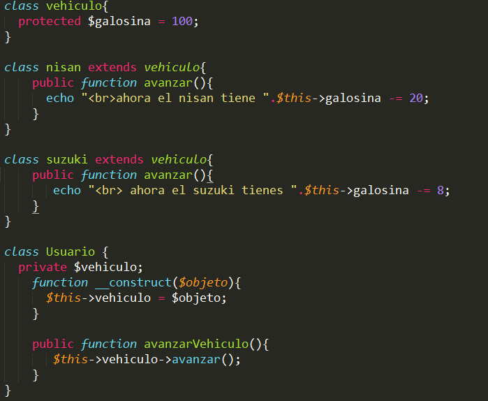Primero creamos una clase llamada vehiculo con una variable protegida que tiene como valor 100.
Ahora creamos 2 clases "nisan y suzuki" que heredaran la clase "Vehiculo", las clases tiene metodos publicos llamado avanzar y en el solo se resta la cantidad de gasolina que consumen estos vehiculos.
Ahora se crea una clase llamada Usuario, en el constructor pasamos como atributo el objeto de nisan y de suzuki esto se obtiene desde la instancia de la clase, especificado mas abajo. Tambien tengo un metodo llamado avanzarVehiculo, lo que hace este metodo es manipular el objeto "nisan" y "suzuki" y asignarle la ejecucion de la funcion avanzar. Recuerda que esta funcion o metodo fue especificado dentro de sus propias clases.
Ahora creamos el objeto de la clase usuario.

Y como resultamo me mostrara la cantidad de gasolina de cada vehiculo.

Haci es como funciona los polimorfismos.
Las excepciones son utilizadas para describir algo que no se esperaba que funcionara de esa manera. Es decir que las excepciones se ejecutan cuando el codigo ha generado un error. Vemamos un ejemplo:

Lo que queremos hacer es divir 2 numeros pero como savemos, no podemos dividir un numero para 0. Haci que creamos una funcion llamada dividir a esta funcion se le pasa un valor por parametro, y pregunto SI el valor es igual a 0. Si es asi entonces colocamos thorw new Exception("mensaje"), pero si el valor tiene otro valor que no se 0 entonces podemos realizar la divicion y retornarla.
try{} es la parte del codigo donde se supone que podria arrojar un error y carch(){} captura ese error y muestra el mensaje que especificastes.

El resultado final seria este.
Para conectarnos a la base de datos utilizaremos la palabra clave new PDO que nos permite especificar el usuario y contraseña de la base da datos para ingresar y el nombre de la base de datos a conectar. Utilizando tambien el try{} catch(){} Veamos un ejemplo:

Si no has realizado cambios de configuracion en tu gestor de base de datos, posiblemente sean "root" de usuario y "" la contraseña vacia, esto son datos por defecto. Si llegara a tener problemas con la conexion me mostraria el mensaje "Error". Ahora necesito mostrar en pantalla todo los titulos de las portadas de los articulos que estan en la tabla articulo en la base de datos. Veamos el ejemplo:

Esta es la tabla con que vamos a interactuar.

Creo una nueva variable llamda consulta donde su valor es la conexion y la consulta en lenguaje SQL la palabra clave prepare() sirve para preparar una sentencia SQL para ser ejecutada por el metodo execute(), la palabra clave fetchAll() devuelve un array que contiene todas las filas del conjunto resultado.
Una vez tengamos todo las datos dentro de un arraeglo podemos mostrarlo en pantalla, podemos mostrar un valor o podemos recorrerlo con un cilo. El foreach es un ciclo que ayuda a recorrer valores especificamente en "array" el $value es un sobre nombre que representa a el arreglo $consulta.

Ahora tenemos los datos en pantalla traido desde una tabla de una base de datos. En este caso solo mostramos los titulo.
Veamos ahora como colocamos esos datos en la portada de un articulo. En esta ocacion vamos a llamar a la imagen, titulo y descripcion dentro de una targeta. Veamos la estructura que utilizaresmos

Puede que te resulte un poco raro la estructura y es por que utilizo un framework llamado boostrap el primer div es una columna, seguido de un enlace, luego otro div con el que utilizo para colocar la imagen, despues otro div para colocar el titulo y por ultimo un div para colocar la descripcion. Nos quedaria asi.....

Los estilos que contiene la targeta son escritos aparte con un lenguaje llamado css, aumque la imagen no tiene nada que ver con la NUBE, se la utilizo solo como ejemplo.
Todas las consultas mostradas hasta ahora han seleccionado los valores de una sola tabla a la vez. Una de las caracteristicas mas beneficiosas de SQL es la habilidad de combinar datos de dos o mas tablas.

Utilizaremos esta tabla donde se registran los usuarios, y como un ejemplo combinaremos con esta otra tabla que sirve para mostrar publicaciones. Si te fijas bien en nrocuentas y en nroPublicaciones tiene el mismo numero de ID esto es fundamental para poder combinar las tablas, si estos ID fuera diferentes, no pudieramos hacer la combinacion.

Escribimos la consulta de esta manera: SELECT * FROM publicaciones, cuentas_usuarios WHERE publicaciones.nroPublicaciones = cuentas_usuarios.nrocuentas

el nrocuentas #7 no lo tomes en cuenta ya que es una relacion de tablas que vamos a ver mas adelante. Como puedes ver hemos combinado las 2 tablas.
Si el nombre de la tabla es muy largo o muy dificil de recordar, puedes agregar sobre nombres y hacerlo mas corto. Utilizaremos las misma tablas del ejemplo anterior ahora escribamos la consulta:
SELECT cu.usuario, cu.nombre, pb.titulo, pb.descripcion FROM publicaciones AS pb, cuentas_usuarios AS cu WHERE pb.nroPublicaciones = cu.nrocuentas
El resultado de esta consulta es:

Ahora bien el apodo o sobre nombre de "publicaciones" es pb y el apodo de "cuentas_usuarios" es cu. Si te fijas bien no utilize el * por que no queria llamar a todo los campos, mas bien especifique que campos queria mostrar.
Los siguientes son los tipos de combinaciones que pueden ser utilizados en SQL
INNER JOIN retorna las filas cuando hay una coincidencia entre las tablas.

LEFT JOIN retorna todas las filas de la tabla izquierda, asi no haya coincidencia en la tabla derecha.

RIGHT JOIN retorna todas las filas de la tabla derecha asi no haya coincidencia en la tabla izquierda.

Como ya vimos antes, inner join solo retorna cuando hay coincidencia entre tablas. Veamos un ejemplo:

Tengo una tabla que sirve para recolectar los documentos del usuario, y como vemos tengo 2 documentos pero de distintos nrocuentas es decir de distintos usuarios. Entonces solo quiero mostrar el registro donde muestre coincidencia con la consulta. Veamos un ejemplo:

SELECT * FROM archivos_documentos INNER JOIN cuentas_usuarios ON archivos_documentos.nrocuentas = cuentas_usuarios.nrocuentas;
Lo que tenemos en esta consulta es, mostrar todo los campos de la tabla archivos_documentos y todos los campos de la tabla cuentas usuarios, pero solo si coinciden los ID de las 2 tablas

Como se observa las dos tablas se unieron.
Como ya vimos antes left join solo retorna la fila izquierda.

Tenemos una tabla que sirve para mostrar los los articulos recomendados y tenemos otro donde recolecta la informacion del usuario.

Ahora escribimos la consulta donde hacemos la relacion:
SELECT * FROM recomendado LEFT JOIN peticion_usuarios ON recomendado.nroRecomendado = peticion_usuarios.nroPeticion

Como puedes ver los resultados me retorna todo los registros de la tabla izquierda y los de la derecha cuando ya no coincidan registros, lo muestra como NULL
Como sabemos right join retorna todo los registros de la tabla derecha. Veamos el mismo ejemplo anterior solo cambiaremos la tabla peticion_usuario por la tabla articulos:
SELECT * FROM recomendado RIGHT JOIN articulos ON recomendado.nroRecomendado = articulos.nriArticulo

Como puedes ver los resultados me retorna todo los registros de la tabla derecha y los de la izquierda cuando ya no coincidan registros, lo muestra como NULL
La funcion UPPER sirve para combertir las letra de minuscula a mayuscula. Ejemplo:
SELECT UPPER(publicaciones.descripcion) FROM publicaciones
En esta consulta especifico que muestre el campo descripcion de la tabla publicaciones, encerrando entre parentesis con la palabra clave upper.

La funcion LOWER sirve para cobertir las letras de mayuscula a minuscula.
SELECT LOWER(publicaciones.descripcion) FROM comentarios

La funcion SQRT sirve para retornar la raiz cuadrada de un valor. Ejemplo:
SELECT SQRT(comentarios.nroComentario) FROM comentarios
En la consulta especifico que muestre el campo nroComentario y calcule la raiz cuadrada de cada registro, encerrado entre parentesis con la palabra clave SQRT

La funcion ASV sirve para retornar el promedio de los valores. Ejemplo:
SELECT AVG(comentarios.nroComentario) FROM comentarios

La funcion SUM sirve para sumar los valores del campo nroComentario. Ejemplo:
SELECT SUM(comentarios.nroComentario) FROM comentarios

La funcion MIN sirve para retornar el minimo valor. Ejemplo:
SELECT MIN(comentarios.nroComentario) FROM comentarios

La funcion MAX sirve para retornar el maximo valor. Ejemplo:
SELECT MAX(comentarios.nroComentario) FROM comentarios

La funcion COUNT sirve para mostrar el numero de filas que hay en una tabla. Ejemplo:
SELECT COUNT(*) FROM comentarios

Una subconsultas es una consulta dentro de otra consulta. Una sola consulta retornara el mismo resultado de forma sencilla. Imaginemos que queremos mostrar los texto de la tabla comentarios, solo cuando "20" sea menor que la suma de nroComentario.
SELECT comentarios.texto FROM comentarios WHERE 20 < (SELECT SUM(comentarios.nroComentario) FROM comentarios )
Es el proceso de mejorar la satisfaccion del usuario mejorando la usbilidad, la accesibilidad y la interaccion entre el usuario y el producto. Aplicando UX al proceso de diseño se incorpora al usuario, de esta manera nos basamos en hechos y no en suposiciones. Se puede medir el nivel de calidad de UX en el que se encuentra un producto.

Funcional: El producto cumple con su funcion, esto es indispensable y tiene una valoracion objetiva.
Confiable: Funciona de manera consistente, es necesario y objetivo
Usable: Puede ser usado sin dificultal, es necesario y objetivo.
Conveniente: Funciona tal y como el usuario espera, es desable y subjetivo, con una pequeña parte objetiva.
Placentero: Genera emociones a uno mismo, es deseable y subjetivo.
Significativo: Integrado en la vida del usuario, es excelente y subjetivo.
Un wireframe no es mas que un boceto donde se representa visualmente, de una forma muy sencilla y esquematica la estructura de una producto o un sitio. El objetivo de estos es definir el contenido y la posicion de los diversos bloques de tu producto, esto incluye menus de navegacion, bloque de contenido, etc. Ademas te permite interactuar estos elementos entre si. En los wirefrmaes no se utiliza ni colores, nitipografias ni cualquier elemento grafico. Lo importante es centrarse en la funcionalidad del sitio y la experiencia del usuario.

Las ventajas de utilizar wireframes son:
Existen un monton de aplicaciones online para crear wireframes como moqus, gliffy. Es habitual tambien desarrollarlo en illustrator, indesign o photoshop que nos permite, de camino, colocar elementos a tamaños real. Para nosotros, la manera mas comoda de abordar un Wireframes es hacer un boceto en una libreta de cuadros utilizando solo lapiz y papel.
Este factor deterina directamente la rapidez o legibilidad de los textos y si no va acorde con el diseño suele ser una mala experiencia para los usuarios. Las tipografias van relacionadas directamente con las emociones, y es mediante el uso adecuado para establecer estos estados de animo positivo, un mal uso de esto puedo generar desacomodos por parte del lector lo que significa que disminuye totalmente el interes de la lectura. Existen dos rostros fundamentales en las familima de las tipograficas
Tamaño: poder especificar el tamaño que tendra la letra mediante pixeles o porcentajes o pulgadas
Palabra por linea: las lineas de texto muy cortas, pueden perder el ritmo de la lectura y mas bien cansan, en las lectura de las linneas demasiado largas nos genera uns dificultad el hacer el salto de una a otra linea.
Color: Este factor puede atraer la atencion de los usuarios, junto con la combinacion entre el texto y el fondo, este debe ser optimo para que la lectura sea legible. Por lo general la mayoria de las tipografias estan diseñadas bajo la tonalidad negro y un fondo blanco.
El color actua como una funcion clave que atrae la atencion del usuario. El color es el aspecto mas facil de recordar cuando se trata de encontrar cosas nuevas para los usuarios. Los colores del diseño siempre hacen conexion con la marcha del producto, la mayoria de las ideas de compra del usuario dependen en gran madida del color.
Antes de comprar un producto el usuario casi siempre miran el color antes de realizar la compra, asi mismo cuando los usuarios visitan el sitio web sienten la sensacion exacta de confianza hacia lo que el producto descata. El color resalta la personalidad de un usuario cuando se usan las aplicaciones.

El usuario se centra en las marcas que son inmediatamente reconocibles. Para crear un aspecto atractivo y reconocido del producto, deben usar los colores correctamente que se alineen con sus ideas de personalidad y emociones.
Azul: es un color que representa dar emociones como confianza, seguridad y relajacion. Rosado: es un color que representa alegria. Negro: este color representa poder. Rojo: es un color que representa atencion inmediata. Verde: este color representa la naturaleza.
Diseño adaptivo, es la tecnica que se usa en la actualidad para tener una misma web adaptable a las diferentes plataformas o dispositivos como tablet, ordenador, smartphone. ¿Porque usar responsive? Una de las razones es que mejora la experiencia de usuario, mejora tanto tu imagen de marca como el tiempo de permanencia en la web y aumentaran la tasa de rebote entre paginas de tu web. Otra razon es de no ser necesario duplicar contenidos. Otra razon es que se reduce los costees de desarrollo y mantenimiento de tu sitio.
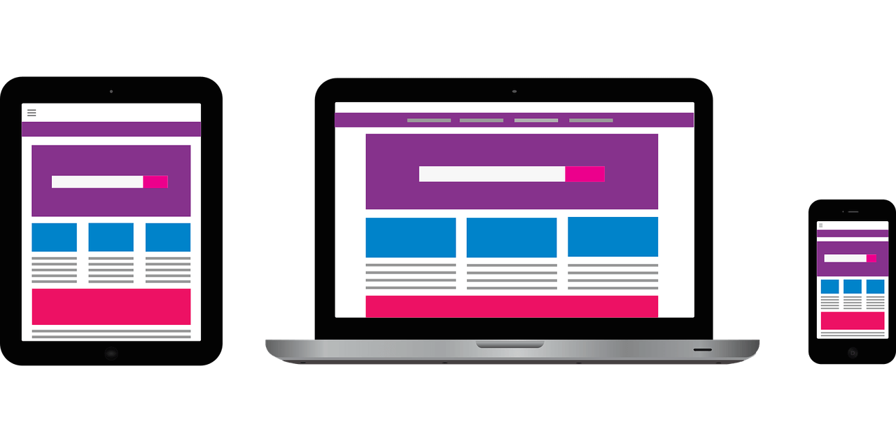Dependiendo de las tecnologias que uses al aplicar Responsive Design han surgido diferentes corrientes y tecnicas, pero finalmente todas van a un mismo punto, hacer sitios y aplicaciones amigables para cualquier tipo de pantalla y que sean rapidos al cargar en el dispositivo del usuario.
Adobe illustrator es un programa informatico, un editor de graficos vertoriales y por lo tanto srive para la edicion y modificacion de esta clase de imagenes. Es sumamente util a la hora de desarrollar cualquier clase de documento grafico que requiera multiples modificadores. Podria crearse la imagen corporativa de una empresa, con su logo y diferentes elementos.
Adobe photoshop es una aplicacion especializada en la edicion de graficos, es uno de los editores de imganes mas difundidos actualmente gracias a su versatilidad, facilidad de uso y gran variedad de herramientas con las que cuentas para realizar las editaciones.
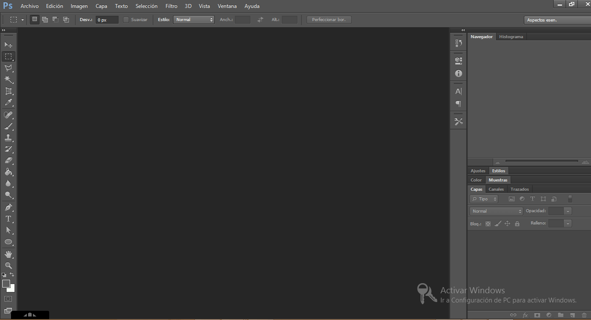Existen muchas mas aplicaciones y herramientas que te pueden ayudar a mejorar la apariencia de tu producto.
La programacion visul brinda los conocimientos necesarios para diseñar y desarrollar aplicaciones con un entorno visual amigable y facil de utilizar para el usuario. Los lenguajes de programacion visual tienden a facilitar la tarea de los programadores, dado que con los primeros lenguajes de programacion crea una ventana era tarea de meses de desarrollo y de un equipo de trabajo. En este proceso se hacen cambios visuales para crear esta nueva tendencia sobre este tema.

En esta secciones vamos a entrar en el entorno de visual basic realizado pequeños ejemplos practicos.
Es un entorno de desarrollo integrado para sistemas operativos windows. Soporta multiples lenguajes de programacion tales como "C++, C#, visual basic.net, java, python, php" al igual que entornos de desarrollo web.

Este es nuestro entorno de desarrollo para empezar vamos a escribir una variable y lo mostraremos en pantalla, sera el tipico "Hola Mundo".
Un IDE es un entorno de programación que ha sido empaquetado como un programa de aplicación, o sea, consiste en un editor de código, un compilador, un depurador y un constructor de interfaz gráfica. Los IDEs pueden ser aplicaciones por sí solas o pueden ser parte de aplicaciones existentes. El lenguaje Visual Basic, por ejemplo, puede ser usado dentro de las aplicaciones de Microsoft Office, lo que hace posible escribir sentencias Visual Basic en forma de macros para Microsoft Word.
Los IDE ofrecen un marco de trabajo amigable para la mayoría de los lenguajes de programación tales como C++, Python, Java, C#, Delphi, Visual Basic, etc. En algunos lenguajes, un IDE puede funcionar como un sistema en tiempo de ejecución, en donde se permite utilizar el lenguaje de programación en forma interactiva, sin necesidad de trabajo orientado a archivos de texto, como es el caso de Smalltalk u Objective-C.
NetBeans es un entorno de desarrollo muy completo y profesional. Contiene muchas funcionalidades, para distintos tipos de aplicaciones y para facilitar al máximo la programación, la prueba y la depuración de las aplicaciones que se desarrollan. También incorpora un editor propio.
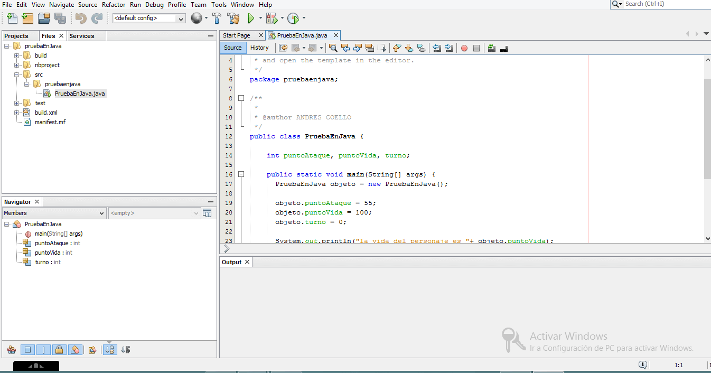Suele dar soporte a casi todas las novedades en el lenguaje Java. Cualquier preview del lenguaje es rápidamente soportada por Netbeans. Asistentes para la creación y configuración de distintos proyectos, incluida la elección de algunos frameworks.
Buen editor de código, multilenguaje, con el habitual coloreado y sugerencias de código, acceso a clases pinchando en el código, control de versiones, localización de ubicación de la clase actual, comprobaciones sintácticas y semánticas, plantillas de código, coding tips, herramientas de refactorización,… y un largo etcétera.
Hasta ahora ya hemos visto lo que son: variables, condiciones, ciclos, funciones todo esto lo veremos en ejemplos con java. Java es un lenguaje totalmente orientado a objetos asi que vamos a utilizar "clases" y "metodos".

Mi estructura basica es la siguiente: Tengo una clase llamada PuebaEnJava y dentro de esta clase especificon mis metodos, el metodo principal donde se manda a llamar a otros metodos es: main(String[] args).
Ahora que tenemos nuestra estructura podemos trabajar, creo un nuevo metodo llamado mensaje() por que necesito imprimir mis datos en pantalla, entonces creo 3 variables, 2 de tipo "String" y 1 de tipo "numerico" donde almacenare mi nombre, apellido, edad. y lo muestro en pantalla con la palabra clave System.out.println(); el signo del + sirve como concatenacion o simplemente unir variables con caracteres. Como ya sabes nada de esto se ejecurtaria si no lo mandas a llamar en la funcion principal mediante su nombre, en este caso mensaje();.
Veamos el siguiente ejemplo de condiciones tomando en cuenta las variables anteriores.

Tengo una condicion que pregunta si mi edad es (mayor o igual) a 18, si esta condicion es verdadera entonces muestra su mesaje dandome la 'bienvenida', pero si la condicion es falsa, nos muestra el contendio de else donde tambien nos muestra un mensaje pero de denegado.
Veamos rapidamente un ciclo en java, realizando la tabla del 5 de multiplicacion.

Creo 3 variables de tipo entero contador es la variables que cuenta las vueltas del ciclo, tabla es la variable con la que boy a multiplicar, total es la variable que almacena el total de la multiplicacion de los 2 variables anteriores.
Como ya sabes los ciclos se ejecutan solo si la condicion es verdadera, pregunto si (contador es 'menor o igual' a 12) y es obio que si es verdadero ya que el valor de contador es 0. Una vez adentro multiplicamos el numero por la tabla y almacenando ese resultado en total, ahora solo muestro en pantalla la tabla.
Como estamos utilizando while y no for tenemos que incrementar el valor de contador con ++. Y por seguridad modificamos el valor de total a 0.
Android Studio es el entorno de desarrollo integrado (IDE) oficial para el desarrollo de aplicaciones para Android y se basa en IntelliJ IDEA . Además del potente editor de códigos y las herramientas para desarrolladores de IntelliJ, Android Studio ofrece aún más funciones que aumentan tu productividad durante la compilación de apps para Android, como las siguientes:

Es un motor de base de datos SQL transaccional de código abierto, ligero, autónomo, de configuración simple y sin servidor, que se caracteriza por almacenar información persistente de forma sencilla, SQLite gracias a sus características se diferencia de otros gestores de bases de datos, proporcionando grandes ventajas sobre ellos.
Así mismo, por ser de dominio público es gratuito tanto para fines privados como para comerciales, se puede descargar de forma libre desde su sitio oficial. Es importante mencionar que SQLite cuenta con varios enlaces a lenguajes de programación entre los que podemos destacar: Java, C, C ++, JavaScript, C #, Python, VB Script, entre otros.
Por las siguientes ventajas:
Firebase es la nueva y mejorada plataforma de desarrollo móvil en la nube de Google. Se trata de una plataforma disponible para diferentes plataformas androir, iOS, web, con lo que de esta forma presentan una alternativa seria a otras opciones para ahorro de tiempo en el desarrollo como Xamarin.
En muchas ocasiones nos planteamos cómo poder acceder a un servicio web para poder tener nuestra aplicación trabajando con datos en la nube. Por ello surgió Firebase, para proveer una API para guardar y sincronizar datos en la nube en tiempo real.
Sus características fundamentales están divididas en varios grupos, las cuales podemos agrupar en:
Swift es un lenguaje rápido y eficaz que proporciona información en tiempo real y se integra a la perfección con código escrito en Objective-C. Así, los desarrolladores pueden ofrecer más seguridad, ahorrar tiempo y crear apps aún mejores.
Swift como el resto de lenguajes de programación existentes cuenta con características que lo distinguen. El objetivo detrás del lenguaje de programación de Apple es crear el mejor lenguaje disponible para usos que van desde la programación de sistemas, aplicaciones para móviles y de escritorio, llegando a servicios en la nube. Más importante aún, Swift está diseñado para hacer que la tarea de escribir y mantener programas sea más fácil para el desarrollador. Para lograr este objetivo, los desarrolladores de Apple y de la comunidad, han abogado porque el lenguaje Swift sea:
Seguro: La manera más obvia para escribir código también debe ser de una manera segura. Un comportamiento indefinido es el enemigo de la seguridad, y los errores del desarrollador deben ser detectados antes de que el software esté en producción. Optar por la seguridad significa que Swift en algunas ocasiones se sentirá estricto, pero la claridad ahorra tiempo a largo plazo.
Rápido: Swift está pensado como un reemplazo para los lenguajes basados en C (C, C ++ y Objective-C). Como tal, Swift debe ser comparado a estos lenguajes en el rendimiento que logra para la mayoría de tareas, un rendimiento similar y en algunas pruebas incluso hasta mejor. El rendimiento también debe ser predecible y consistente, hay un montón de lenguajes con características novedosas como Swift pero donde la rapidez muchas veces no se logra, de hecho rara vez podemos contar con lenguajes comparables en este aspecto a los basados en C.
Expresivo: El lenguaje Swift se beneficia de décadas de avance en la ciencia de la computación y ofrece una sintaxis que es sin dudas todo un placer, con las características modernas que los desarrolladores de hoy en día esperan encontrar. Pero Swift se encuentra en constante desarrollo, bajo un estricto seguimiento de los avances que va teniendo el lenguaje, en una continua evolución para hacer Swift aún mejor.
Existen muchas tegnologias web y cada una tiene una funcionalidad y propositos diferentes, veamos las mas utilizadas o famosos por categorias.
Bootstrap: Una de las más utilizadas en la actualidad. Buena compatibilidad con el diseño responsive y buena documentación
Foundation: Alternativa muy buena a Boostrap. Tiene mucha flexibilidad, aunque puede resultar difícil de aprender.
Semantic UI: El mas fácil de aprender, el nombre de sus clases está diseñado para que resulten fáciles de memorizar.
Angular: En su primera versión, AngularJS, su tenías que utilizar JS para usarlo, pero en las versiones actuales (Angular 4) se utiliza Typescript con lo cual si Javascript no es tu fuerte, ésta es tu mejor opción ya que la sintaxis de Typescript es muy parecida a Java. Su rendimiento es menor a los frameworks de la competencia.
React: Promovido por Faceebook. A diferencia de Angular, React no es un framework completo. Tiene una comunidad muy completa con un montón de librerías para usar con este framework. Tiene una curva de aprendizaje alta para aplicaciones muy grandes.
Vue: Uno de los frameworks más fáciles de aprender. Se puede usar como sustituto de Jquery o incluso para aplicaciones más grandes. Tiene muchas similitudes con React y con AngularJS. La comunidad en torno a este framework es menor aunque con el tiempo se esta popularizando.
Spring: El más utilizado de esta categoría. Puedes hacer desde un backend con API REST a uno con SOAP.
Struts: Se usa mucho en ámbitos empresariales. No es una libería muy ágil pero ahora bastante código a los programadores.
Vaadin: El menos utilizado de estos tres. Ofrece la posibilidad de seguir un patrón MVC o MVP. También ofrece librerías UI y de componentes para facilitar la vida a los programadores.
Django: El más popular dentro de python. Puedes crear aplicaciones web una forma muy sencilla y limpia
Flask: Es un microframework, sirve para exponer páginas o una API pero no implementa nada más.
TurboGears: Combina muchas librerías de python en una. Muy extensible y configurable.
ExpressJS: El más popular con diferencia. Muchas otras librerías de nodejs parten de ésta. No ofrece integraciones con bases de datos por lo que tendremos que instalar más librerías junto a Express.
Koa: Basado en ExpressJS pero con la finalidad de ofrecer una experiencia minimalista para mejorar el rendimiento. Ofrece soluciones muy eficaces para controlar la ejecución de javascript de forma asíncrona.
Sails: Uno de los más sencillos de utilizar. Con este framework tendremos que seguir el patrón MVC. Por defecto ofrece integraciones con multitud de bases de datos de una forma muy sencilla.
PhoneGap es un paquete de librerías que permite empaquetar aplicaciones HTML5 de manera que puedan ser usadas como apps para móviles o Web Apps. Te explicamos los detalles más relevantes sobre esta versátil solución que nos permitirá dar el salto fácilmente al desarrollo de aplicaciones multidispositivo, aunque no podemos olvidar que también tiene sus limitaciones.
PhoneGap es una solución de Adobe que nos permite llevar el desarrollo para la web al mundo de los dispositivos. Se basa en una “envoltura” que nos permite ejecutar aplicaciones desarrolladas con HTML, CSS y Javascript como si fueran aplicaciones nativas para los teléfonos móviles o tablets.
Lo mejor de PhoneGap es que permite escribir una única vez el código de la aplicación, con tecnologías HTML5, y publicarlo en cualquier plataforma móvil dentro de las más conocidas. Así que, o bien desarrollas tu aplicación en nativo para cada uno de los sistemas operativos, con el consiguiente trabajo que ello conlleva, o la programas una única vez usando alguna plataforma como PhoneGap.
Frontend son todas aquellas tecnologias que corren del lado del cliente, es decir todas aquellas tecnologias que corren en el navegador web. Generalizandose mas que nada en lenguajes como html, css, javascript. Normalmente en frontend se encarga de estilizar la pagina de tal manera, que la pagina pueda quedar comoda para la persona que la ve, es decir esta persona debe de conocer tecnicas de experiencia de usuario para dar una vista comoda de la pagina.
El desarrollador frontend debe de saber un poco de diseño, ya que como he dicho anteriormente, este se va a encargar de que la pagina no solo se vea bonita sino que sea comoda de utilizar, comoda de navegar e intuitiva. De las 3 tecnologia que nombramos antes tambien puedes utilizar framework ya sea de estilo o de interactividad.
Es el codigo que corre del lado del servidor, es decir esta persona se encarga de utilizar lenguajes como: PHP, python, .net, java, etc. es aquel que se encarga de interactuar con bases de datos, verificar manejo de sesiones de usuarios, montar la pagina en un servidor y desde este "servidor", todas las vistas que el forntend crea, es decir, que el backend es encarga mas que nada de la manipulacion de los datos, que en muchas ocasiones suele ser lo mas tedioso, pero al mismo tiempo, un backend no sirve de mucho si no exite un fronted de por medio que se haya encargado de que las paginas se vea estetica.
El backend normalmente debe de conocer "base de datos, framework" que permiten desenvolverse mejor en la manera en la que sirve las paginas, ya que el se va a encargar de que todos los datos que llegan desde el frontend, lleguen a una base de dato, por tanto debe de conocer un poco de seguridad, para mantener los datos cuidados y tratar de protegerse de todo tipo de inyecciones que se puedan tratar de hacer en el servidor para que no sea vulonerable.
HTML no es un lenguaje de programación pero se utiliza para el desarrollo de páginas de Internet. Se trata de la siglas que corresponden a HyperText Markup Language, es decir, Lenguaje de Marcas de Hipertexto. HTML es un lenguaje de marcado descriptivo que se escribe en forma de etiquetas para definir la estructura de una página web y su contenido como texto, imágenes, entre otros, de modo que HTML es el encargado de describir (hasta cierto punto) la apariencia que tendrá la página web.
Las etiquetas HTML son fragmentos de texto rodeados por corchetes angulares < >, que se utilizan para escribir código HTML, en HTML existen etiquetas de apertura y etiquetas de cierre, tienen la forma: <etiqueta> <etiqueta>. Donde <etiqueta> es la etiqueta de apertura y </etiqueta> es la etiqueta de cierre indicada por la diagonal. HTML tiene definidas gran variedad de etiquetas para distintos usos.
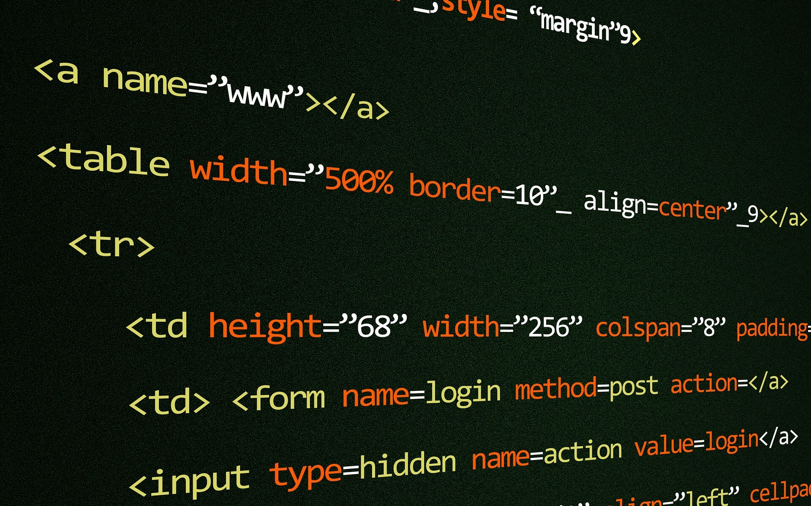La arquitectura basica de html se define como cabeza titulo y cuerpo. es algo asi:
<html>
<head>
<title> </title>
</head>
<body>
</body>
</html>
dentro del cuerpo o de la etiqueta body se especifica las demas etiquetas como las secciones, imagens, parafos, articulos, tablas y mucho mas. Dependiendo de las cosas que deceas crear o etiquetar.
Cuando se habla de apariencia estética o cambios visuales de una web siempre se mencionan los estilos CSS. Vamos a explicar un poco qué son y para qué sirven. CSS es el lenguaje para describir la presentación de páginas web, por ejemplo los colores, el diseño y las fuentes. Nos permite adaptar la presentación a las diferentes necesidades y tipos de dispositivos. El CSS es independiente al HTML y se puede utilizar con cualquier lenguaje de marcado basado en XML. La separación del código HTML de CSS hace que sea más sencillo mantener los sitios, y las hojas de estilo que influyen en una o varias páginas. Esto se conoce como la separación de la estructura de la presentación.
Los estilos CSS son reglas que se definen para los elementos HTML. Dentro de un archivo CSS podemos incluir infinitas reglas, y cada una se puede aplicar a varios selectores diferentes y cada declaración puede incluir tantos pares propiedad/valor como sean necesarios.
body{
color: green;
}
Su arquitectura es muy simple, en este caso estoy especificando el color de letra que estan dentro de la etiqueta body, el color es verde.
JavaScript es un lenguaje de programación que te permite realizar actividades complejas en una página web — cada vez más una página web hace más cosas que sólo mostrar información estática — como mostrar actualizaciones de contenido en el momento, interactuar con mapas, animaciones gráficas 2D/3D etc. — puedes estar seguro que JavaScript está involucrado. Es la tercera capa del pastel de los estándares en las tecnologías para la web, dos de las cuales son HTML y CSS.

JavaScript Es un lenguaje de programación que te permite crear contenido nuevo y dinámico, controlar archivos de multimedia, crear imágenes animadas y muchas otras cosas más. Aunque, no todo, pero es increíble lo que puedes llegar a hacer con tan sólo unas pocas líneas de código de JavaScript.
PHP es un lenguaje de programación interpretado que se utiliza para la generación de páginas web de forma dinámica. Éste código se ejecuta al lado del servidor y se incrusta dentro del código HTML. Cabe destacar que es un lenguaje de código abierto, gratuito y multiplataforma. El lenguaje PHP se procesa en servidores, que son potentes ordenadores con un software y hardware especial. Cuando se escribe una dirección tipo http://www.aprenderaprogramar.com/index.php en un navegador web como Internet Explorer, Firefox o Chrome, ¿qué ocurre? Se envían los datos de la solicitud al servidor que los procesa, reúne los datos (por eso decimos que es un proceso dinámico) y el servidor lo que devuelve es una página HTML como si fuera estática.
Lo mejor de usar PHP es que es extremadamente simple para el principiante, pero a su vez, ofrece muchas características avanzadas para los programadores profesionales y más avanzados. Con PHP puedes procesar la información de formularios, generar páginas con contenidos dinámicos, o enviar y recibir cookies, entre muchas más cosas. PHP lo utilizan desde pequeñas páginas web hasta grandes empresas. Muchas aplicaciones web están construidas usando PHP
MySQL, es un sistema de gestión de base de datos relacional o SGBD. Este gestor de base de datos en multihilo y multiusuario, lo que le permite ser utilizado por varias personas al mismo tiempo, e incluso, realizar varias consultas a la vez, lo que lo hace sumamente versátil.
Este gestor de base de datos es muy utilizado en desarrollo web, ya que permite a los desarrolladores y diseñadores, realizar cambios en sus sitios de manera simple, con tan sólo cambiar un archivo, evitando tener que modificar todo el código web. Esto se debe a que MySQL, trabaja con un sistema centralizado de gestión de datos, que permite realizar cambios en un solo archivo y que se ejecuta en toda la estructura de datos que se comparte en la red. Además, permite incluir noticias e información rápidamente en un sitio web, utilizando un simple formulario, sin tener que tocar el código del website.
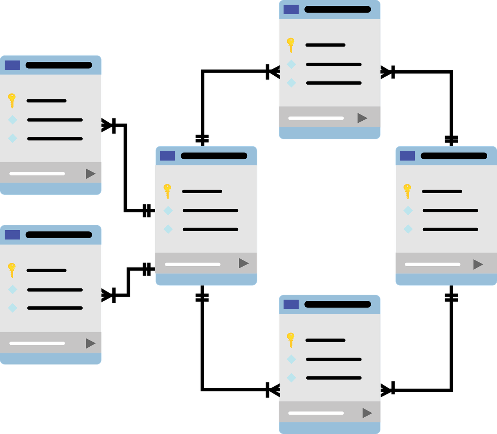Cuando se combina con php, se convierte en una mezcla poderosa, que siempre es tomada en cuenta para realizar aplicaciones cliente/servidor, que requieran el uso de una base de datos rápida, segura y potente.
Linux está presente en un sin fin de dispositivos, es el sistema operativo más usado en los servidores. Veamos por que.
La estabilidad de un sistema Linux, más cuando es bien sabido que una instalación típica puede correr durante años sin presentar fallas. Linux maneja grandes cantidades de procesos mucho mejor que Windows y no requiere reiniciar ante los cambios de configuración o luego de actualizaciones del sistema.
Seguridad: La comunidad de Linux responde mucho más rápido ante estos eventos y gracias a que el código fuente está disponible, cualquiera con los conocimientos necesarios puede corregir el fallo y ponerlo a disposición de los usuarios de inmediato. No está de más decir que Linux es atacado con mucha menos frecuencia por virus y malware.
Flexibilidad: Es común no instalar interfaz gráfica para evitar el desperdicio de memoria RAM, escoger un sistema de archivos óptimo según las necesidades del servicio o compilar una aplicación si queremos adaptarla a la medida de nuestro sistema. Linux puede reconfigurarse para incluir sólo los servicios esenciales para el tipo de negocio y así optimizar el uso de los recursos.
Costos: la mayoría del software que se usa en Linux es gratuito mientras que el propietario está atado a costosos esquemas de licenciamiento o a ventas de complementos adicionales para agregar nuevas funcionalidades.
Libertad: Con Linux eres libre de usar, modificar y combinar lo que desees para satisfacer tus necesidades.